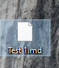
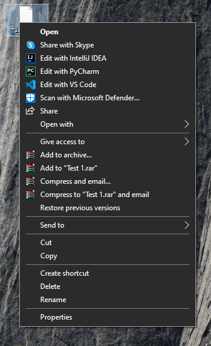
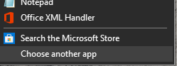
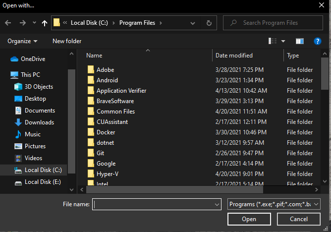
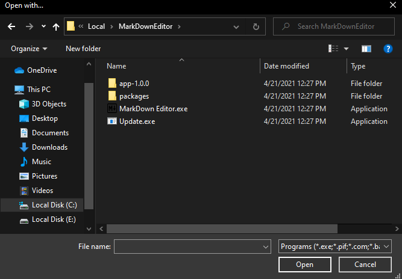
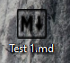

Ans: Don't Panic try to restart application or try to move application window.
Reason: This is due to your host operating system which does not allow application to read or write file.
Reason: This app is only for competition among three friends Daksh Desai, Manan Gandhi and Harshil Parikh.
Ans: You can make a markdown code for about 10 to 20 lines and then use "---" to separate each slides.(If you write more code than the specific screen size than the code will no be rendered in slide)
The color difference is due to our smart preview box which recommends you colors. You need to code colors on your own in markdown.
For achieving this you need to follow some simple steps:
1: This will be the initial file.
2: Right Click the file and click open with:
3: Click choose another app and then a pop will open:
4: Check for Markdown Editor and if it is not there then click more apps and then look for another app in pc :
5 : Search for the path where app is downloaded in the prompt open(By default it is downloaded at C:\Users\USERNAME\AppData\Local\MarkDownEditor)
6: Select MarkDown Editor.exe File and Now all your MarkDown files will be opened through MarkDownEditor
7: To verify this you will be able to see MarkDown Editor Logo on your md file:
You can find source code at: Github